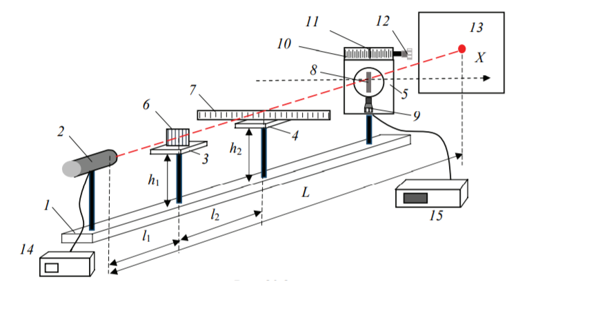

Лабораторная установка представляет собой лазер 2 (целеуказатель лазерный), который установлен на оптической скамье 1. Источником излучения в целеуказателе является лазерный излучающий диод. Блок питания 14 лазера расположен отдельно. На оптической скамье расположены горизонтальные столики 3 и 4, на которые в ходе выполнения лабораторной работы устанавливают дифракционную решетку 6 и линейку 7, а также измерительный блок 5. Измерительный блок содержит щель 8, ширина которой может регулироваться микрометрическим винтом 9. За щелью установлен фотоэлемент, соединенный с микроамперметром 15. Щель и фотоэлемент могут перемещаться в горизонтальном направлении координатной оси Х при вращении ручки 12. Перемещение фиксируется по линейке 10 относительно неподвижной метки 11. Также имеется экран 13 с миллиметровой сеткой.

Лазер
Оптическая скамья
Диод
Блок питания
Измерительный блок
Микроамперметр